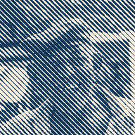

Garis Halftone

Menggambar ulang lapisan sebagai garis cetak yang menebal di area gelap dan menipis di area terang.
Pengaturan
| Pengaturan | Jenis | Rentang | Default |
|---|---|---|---|
| Jumlah | Angka | 0 hingga 500 | 100 |
| Kekuatan | Angka | 0 hingga 1 | 0.5 |
| Sudut | Sudut | 0° hingga 3600° | 45° |
| Fase | Angka | -1000 hingga 1000 | 0 |
| Warna 1 | Warna | – | #113355 |
| Warna 2 | Warna | – | #FFEEDD |